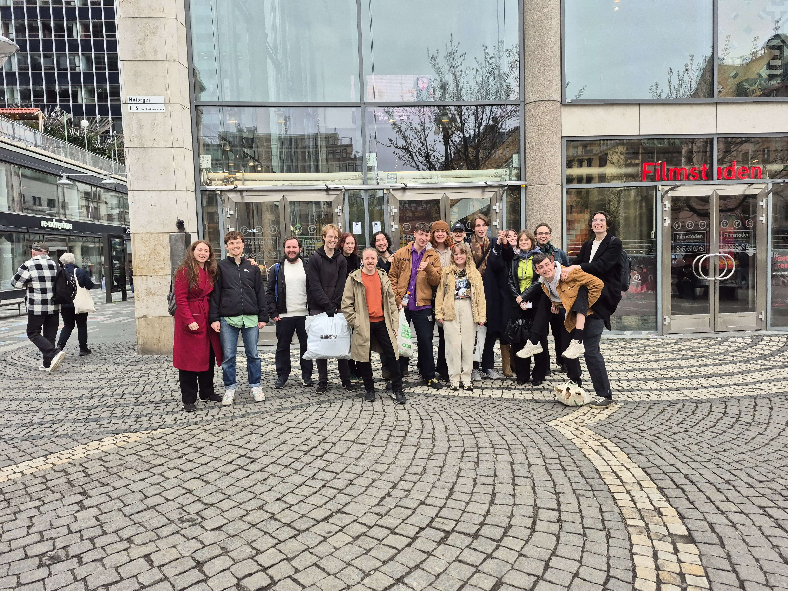
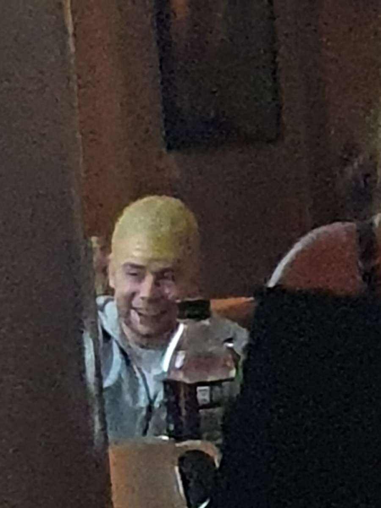
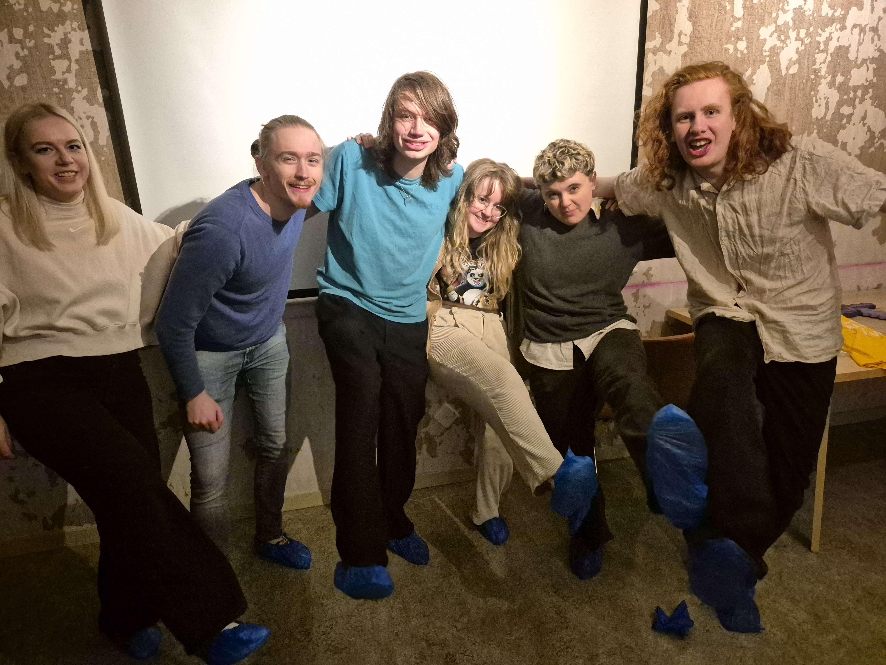
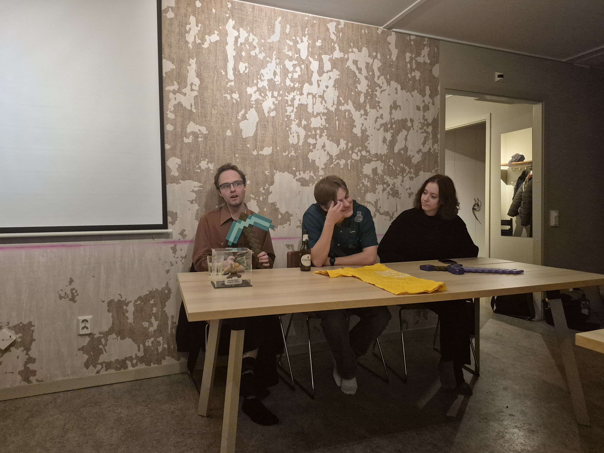
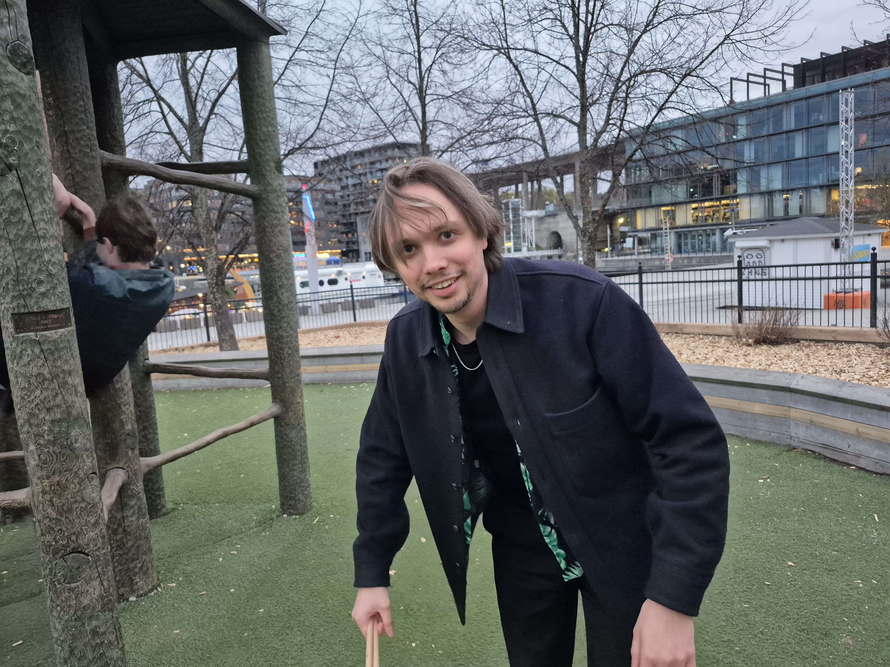
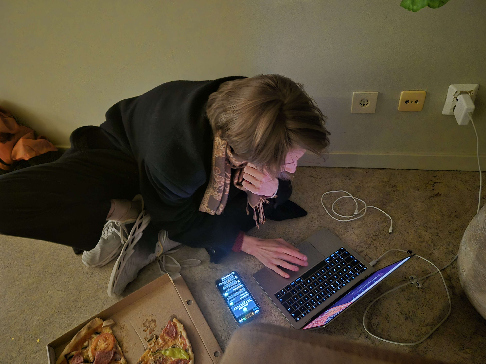
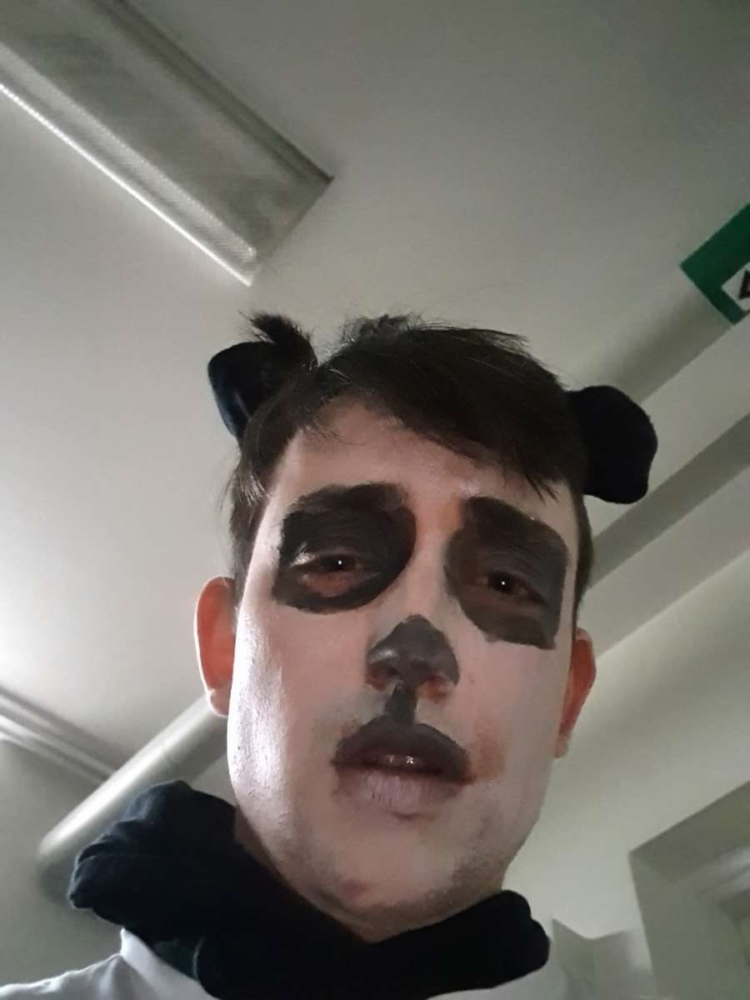
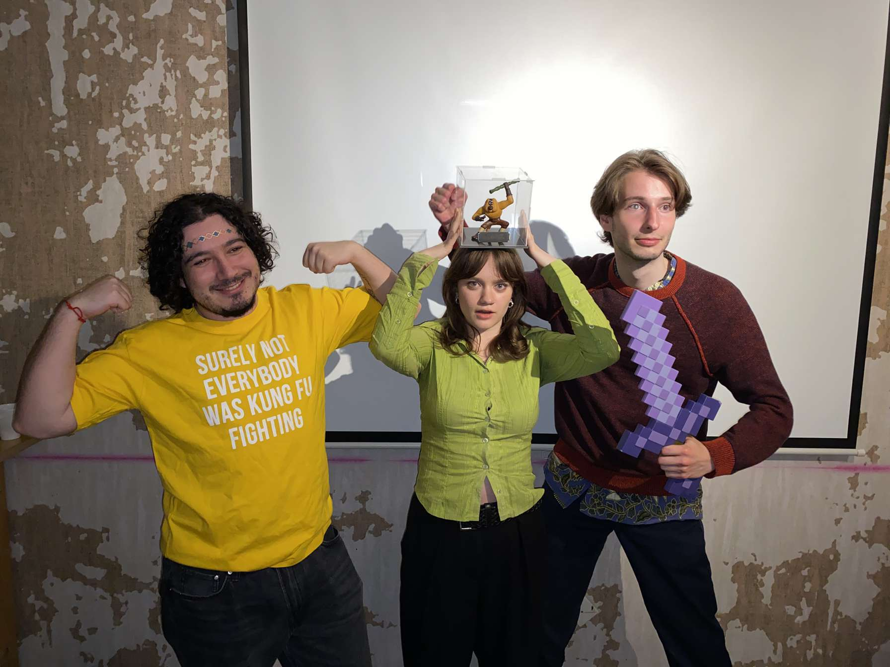

2025 var ett annat stort år för Kung Fu Påska. Detta var 2andra året som en "Modern" KFP hålldes i den stora festlokalen och även andra gången som THE KUNG FU PÅSKA EXTRAVAGANT CHARACTER TRIBUTE CHALLENGE hålldes. Temat för detta år var "A Minecraft Movie" med Jack Black som huvudrollen. Precis som året innan så började denna KFP med en gemensam biovisning och földes sedan upp med TKFPECTC i festlokalen. Det är värt att nämna att Ruben gick och kissade så att han missade när dem sa "CHICKEN JOCKEY!!!". Detta år var det dock ännu mera personer med på bion och ännu mera personer med på festen än någonsin innan.

Tävlingen började med ett bonusnummer i formen av en Minecraft-Letsplay som förklarar KFP av Leo. Aron hade med en speciell snapsvisa som forsatte att utvecklas under kvällen. Polski hade med hemgjorda kakor som möjligen föreställde minecraft dirt. Nils2 hade en Minecraft Parkour Challange där vi delas in olika lag och tvingas göra en hinderbana utomhus. Vinnarna fick Diamond Boots och blev nya generationens Parkour Champions. Anders, Nils1 och Måns+Mira höll alla i varsin kahoot, dessa handlade inte bara om Kung Fu Panda utan även lite om "Young Sheldon", "Minecraft Wikin", "Justin Bieber" och "Skelefteå". Visar sig till slut att Smeden kommer från Skelefteå.
   
3dje plats: David dök upp igen i tävling med ett till sista-minuten bidrag som man kunde se honom "cooka" under kvällen. Detta var en Meta-film som kommenterar på hur David borde ha gjort färdigt sin Karaktär tribute för länge sedan när den egentligen gjordes färdigt sista minuten under Festen. Rolig nog att ge David en trejdeplats.
2da plats: GB gör även han en stor retur detta år. Hans bidrag är en kombination av flera musikvideos och en del där publiken är delaktig och måste skapa sina egna minecraft parodi låtar. Storyn följer upp GBs Little Panda Fighter video från förra året. Först så är Little Panda Fighter och Jack Black fiender med varandra, men sen så teamar dem upp med varandra för att besegra Herobrine med kraften av song. Produktionen på denna var alldelles för hög för att inte hamna på prishallen.
1a plats: Årets vinnare var Ebbsod tillsammans med Schacko och Aron. Dem visade en video mockymentary om Pos karriär som kändis. Efter att hans karriär fallerar och han blir beroende till Honing så dyker "Po Noodles" upp IRL i lokalen och håller en monolog innan han dör. En helt otrolig redigerad video tillsammans med en Po performance som överaskade alla. Detta var en händelse som det kommer att snackas om länge.
Ebba tar hem årets Monkey trofe tillsammans med Shacko och Aron som nu båda har varit med i två vinnande lag. Om Wiberg dominansen kommer att brytas i framtiden återstår att se.
